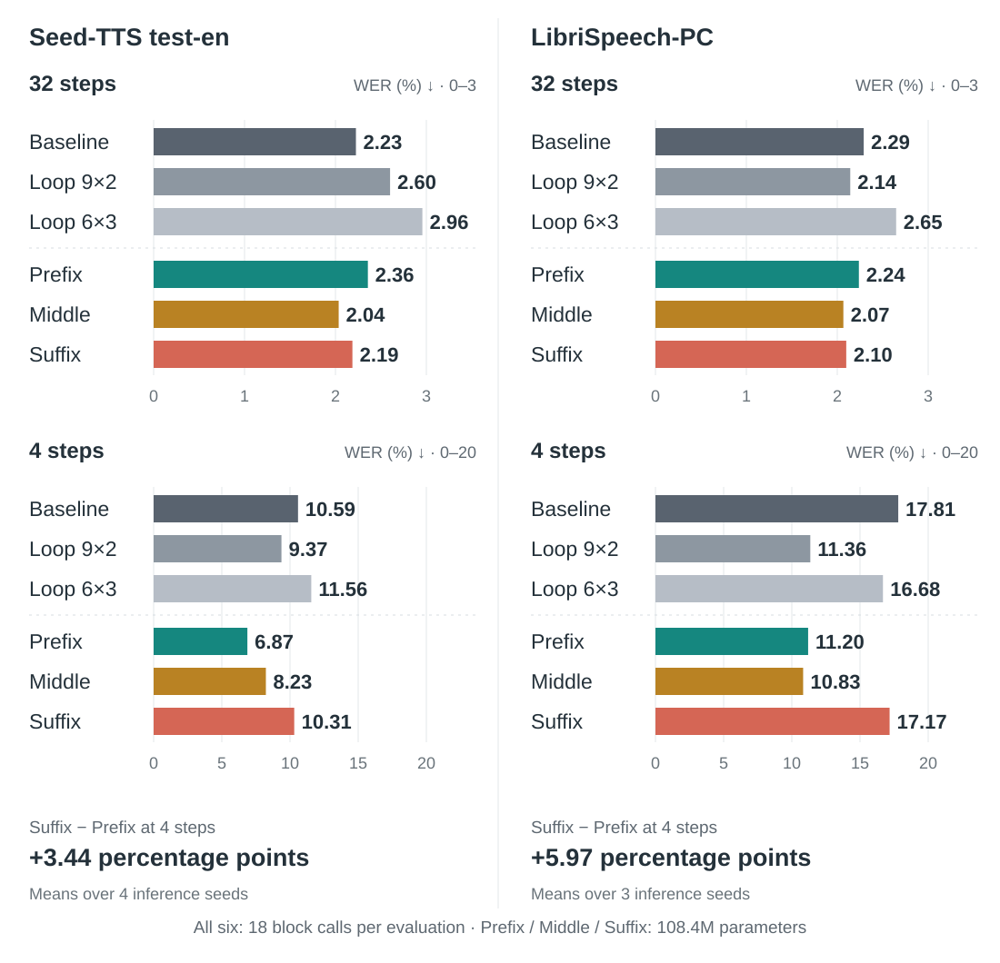

Where to Loop in
Flow-Matching Text-to-Speech
A study of weight sharing, loop placement, and sampling budget in F5-TTS
Abstract
Where should a flow-matching speech generator share weights across depth? We study six F5-TTS layouts that execute the same 18 Transformer block calls, varying both the amount and position of sharing. Three partial loops—Prefix, Middle, and Suffix—have identical parameter counts but respond differently to the sampling budget. At 32 steps, their word error rates are close. At four steps, Suffix has 3.44 and 5.97 percentage points higher WER than Prefix on Seed-TTS and LibriSpeech-PC. Middle achieves the lowest 32-step WER on both datasets, while Suffix gives the highest 32-step speaker similarity among the partial loops. The four-step placement gap persists across training checkpoints despite Suffix’s lower logged training loss. Weight sharing also reduces storage: repeating nine blocks twice saves 47.1% of parameters and 34.5% of peak inference allocation, with comparable sampling time. These results show that loop placement should be evaluated at the intended sampling budget.
Six layouts, the same executed depth
Full loops vary how much is shared. Partial loops vary where it is shared, at the same parameter count.
Sharing position matters most at four steps
Prefix, Middle, and Suffix all have 108.4M parameters. Their WERs are close at 32 steps; at four steps, Suffix falls behind Prefix on both test sets.

Audio samples
Compare the Baseline with Loop 9 × 2 and Loop 6 × 3 to hear the effect of sharing more weights. Compare Prefix, Middle, and Suffix to hear the effect of sharing position, then listen across the two sampling budgets.
Loading the selected sentence…
Transcript
| Model | 32 steps | 4 steps |
|---|
Six examples selected by a fixed rule across short, medium, and long utterances, before inspecting model scores. Individual clips can differ from the aggregate ranking above. All models use the same text, reference voice, and inference seed.
Audio settings and sample selection
Seed-TTS test-en; seed 0; 500k-update EMA checkpoints; Euler sampling, CFG 2, sway −1. Two examples per target-duration group, with distinct reference prompts. Original WAV files are served without trimming or loudness adjustment.
See the sample manifest for the fixed selection rule, transcripts, and per-clip objective metrics, and the audio checksums for file verification. These examples are not a human listening-test result.
All six models
Word error rate at both sampling budgets, alongside parameter count and measured memory and sampling time.
| Model | Params (M) | Seed-TTS WER ↓ | LibriSpeech-PC WER ↓ | Infer. alloc. (MB) | Train alloc. (GiB)* | Sampling RTF ↓ | ||
|---|---|---|---|---|---|---|---|---|
| 32 steps | 4 steps | 32 steps | 4 steps | |||||
Mean utterance WER (%): means over four inference seeds on Seed-TTS and three on LibriSpeech-PC. Bold: lowest mean in each WER column. All quality results use 500k-update EMA checkpoints.
Inference: H100, FP32, batch one, 32-step Seed-TTS. Peak allocated memory includes the vocoder. Sampling RTF = sampling time ÷ generated audio duration; it excludes vocoding.
*Training: late-training rank-0 cumulative allocation peaks. Prefix/Suffix used H200; the other models used H100. These records are not a controlled hardware comparison or minimum GPU requirements.
Sharing reduces storage while retaining the executed depth. Loop 9 × 2 uses 47.1% fewer parameters and 34.5% less peak inference allocation than the Baseline. At the same step count, sampling RTF remains approximately 0.143 across all six layouts.
Speaker similarity and predicted speech quality
SIM-o measures speaker similarity; UTMOS predicts naturalness. Higher is better for both. UTMOS is an automatic score, not human MOS. Values below use the same inference seeds and checkpoints as the WER table.
Training measurements and evaluation scope
Training uses eight GPUs, accumulation of two, and BF16 mixed precision with FP32 parameters, EMA, and Adam states. The table reports the largest rank-0 cumulative process peaks in records from 400k–500k updates. These are neither maxima across all ranks nor minimum GPU capacities.
| Model | GPU ×8 | Allocated (GiB) | Reserved (GiB) | Seconds / update |
|---|
Loop 9 × 2 has lower allocated but higher reserved memory than the Baseline. Update time is the median over 1,000 logged windows, each covering 100 updates. Inference timing uses one recorded run per layout; small differences do not establish a speed advantage.
There is one training run per layout. The comparison fixes 500k updates rather than selecting an earlier checkpoint for each model. Across nine common checkpoints, Suffix has lower logged training loss than Prefix but higher four-step WER on both test sets; the gap widens from 300k to 500k. Training loss uses online weights, while speech evaluation uses EMA. This observation does not establish a causal mechanism. No human MOS study has been completed for these models.